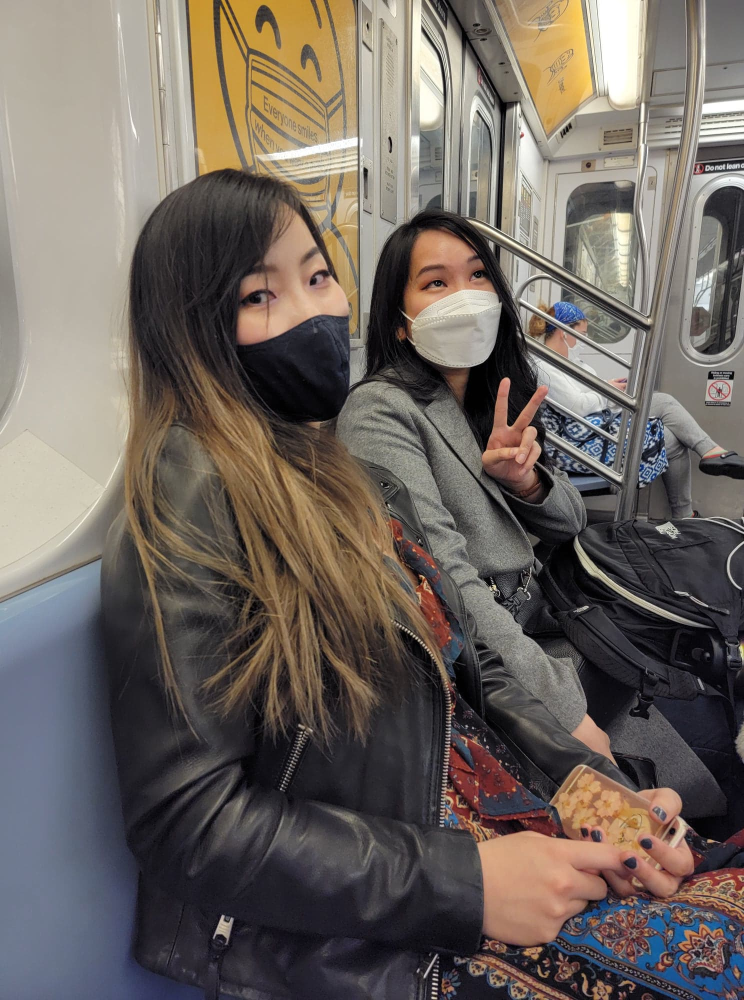
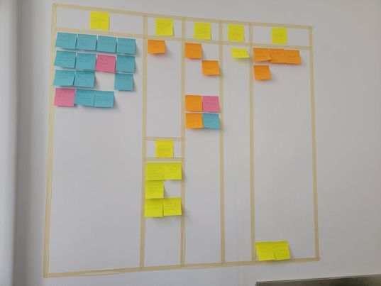

Onward to the Databrowser (2021-04-22 to 2021-04-29)
2021-04-22
On Thursday, after creating writing the journal entry, I worked on Liqid Chat a bit. I fixed a login problem, but didn't deploy it.
I had two meetings in the evening. The first was with Michael Bowman, a friend of uncle donald. It went well. He criticized the pitch, but he did like the idea. My main problem was that I started my pitch with my credentials rather than the problem I'm solving. Doing it the other way around would probably be more successful. So I came up with a better beginning pitch that uses relatable examples to outline the problem. Perhaps this has been the problem with raising money all along. I'll meet back up with Michael, and he said he'd introduce me to people who might be interested in investing.
The second meeting didn't go as hot. I finally got a meeting with Josh Coyne from KP, but he seemed rather ambivalent to the entire thing.
2021-04-23
On Friday, I pushed the next version of Liqid Chat with a few more fixes for push notifications.
In the evening, Ailin's friend, Nancy arrived from Philedelphia. We made our way up to Hudson Yards, where her bus stopped, then went down to a bar in the East Village and got desert. We walked to our place and talked to the late evening!

2021-04-24
On Saturday, ttohe plan was to walk all around New York going to different shops. In the morning before we left, I read Nancy chapter 1 of Star Jump. That got my mind going on a few things to overcome my writers block. One of the main problems was that I was planning on Anyo being kidnapped 3 whole times! Instead of that, he should only be kidnapped once. So, that requires a rewrite of the finale.
We snaked our way through New York trying different restaurants and ending at Hudson Yards via the Highline to drop off Nancy.
2021-04-25
On Sunday, I didn't do a lot. Towards the end of the day I was feeling unaccomplished, so I came up with a plan to create a new Kanban board. I've enjoyed these in the past as a productivity tool, so it might work again. Ailin and I went to Target and got tape and sticky notes.
I ended the day by playing around with Planet Coaster and getting used to its building system. I have an idea to start a YouTube series where I just build some nice houses and businesses and maybe eventually a full city district. But, I need to learn the building toos first. Ailin's been talking about how great it would be to have a house with a turret, so I tried to build a house with a turret.
2021-04-26
I started the day by setting up the Kanban board and labeling it with the things I needed to do.

This board proved to be very effective. I spent time revamping my power point based on some pointers Danny Done sent me as well as the advice I had received from Michael Boseman. After that, I began assembling a list of VCs to reach out to. I discovered that Jonathan follows a lot of VCs on Twitter, probably left over from the time he was raising money. So, I reached out to each one that Jonathan followed.
I also spent time finishing up Baby's First Roadtrip. I didn't complete chapter 3, but I got close.
2021-04-27
I began Tuesday by completing the third chapter of Baby's First Roadtrip.
After that I was planning on doing a few bug fixes for Liqid Chat, but I had a chat with Danny Done first. We talked about marketing Liqid Chat, but he also brought into question how well sign ups for Liqid Chat would translate to sign ups for the data browser. After the call I considered it more and I think he has a point. Liqid Chat has done well for establishing how I would get users, but beyond that, it is nothing like the databrowser. What if I were to build a prototype for the databrowser and see how many sign ups I can get for that? I know I discussed building a prototype before and decided against it, but that was before Liqid Chat had any users. It's now up to 126 users and that's going to grow once I give the presentation at Solid World. At this point, I've proven I can get initial users. I just haven't proven I can get daily active users. That's where Liqid Chat has its main problem. It doesn't offer anything more than a regular chat application. It's basically cool because its a usable Solid Application. That gets people to sign in and try it out, but not using it. The databrowser offers something new that people can't do anywhere else. Building a prototype of that could be the next step.
I do acknowledge that this will take a LOT of work, but I'm scoping it down. I don't need the databrowser to have full 3rd party applets. It just needs to be architected in a way that 3rd party applets can eventually be included. The main point is to show that I can get daily active users on a databrowser-like product, then once I can prove that, I can get funding to build the dev tools.
So, I began planning out how this new databrowser would work. I brainstormed a few initial applets. The most important thing will be the architecture. And there are a few problems that need solving. Namely, how is the "global data index" going to work? This is when I came up with a peer to peer update system plus an Etherium smart contract. I'm not sure if all of that will make its way into the prototype, but it's good to know that's a solution.
Long story short, I'm putting new features on Liqid Chat on hold. I'll still promote it, but the main focus is on the new databrowser prototype. The way Liqid Chat was built uses old technologies and new Solid Technologies have come out, so I would build it a different way today. Eventually, Liqid Chat will be replaced with the codebase of the databrowser.
2021-04-28
On Wednesday, I continued to work on the basics for the new databrowser and completed a design for a new library that I would use in my react components. It's a lot simpler than what you currently need to do to get Solid data, and it works by using data shapes. Here's all you need to do to fetch data in this new library:
function App() {
const chat = useData(CHAT_URI, chatShape);
const creatorProfile = useData(chat.author, profileShape);
if (chat._isFailure()) {
return Failed to get chat data: {chat._error}
}
if (creatorProfile._isFailure()) {
return Failed to get profile data: {creatorProfile._error}
}
if (chat._isNotFetched() || creatorProfile._isNotFetched()) {
return Loading...
}
return (
Test App
{chat._isSuccess() ?
Chat Name: {chat.name}
: undefined}
{creatorProfile._isSuccess() ?
Profile Name: {creatorProfile.name}

: undefined}
);
}
Once that was done, I completed the rest of the things on my Kanban board. Ailin went to get her second does of a COVID shot, but missed her appointment! She had to go all the way to Brooklyn too. She didn't seem to be having that great of a day :(. But she was able to get a shot in the morning of the next day.
2021-04-29
Wednesday began with a practice round of Solid World. It went well and I learned about things other people are doing in the community. It sounds like the idea to rewrite Liqid Chat is a good one due to the new dev tools that Inrupt is releasing.
After that, I wrote this journal.
Back to List